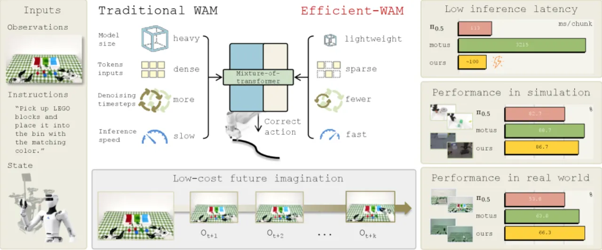
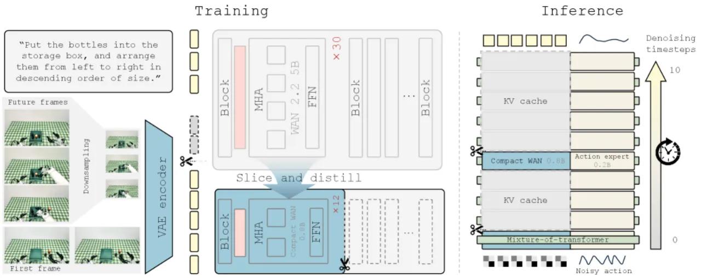
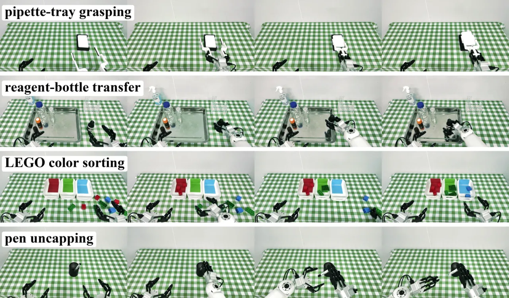
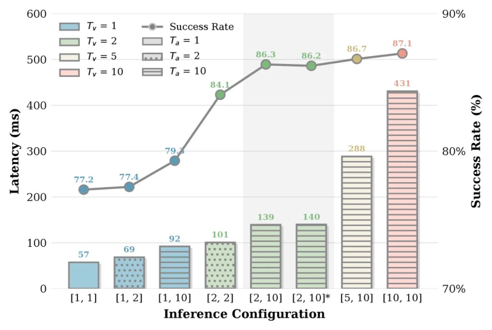

World-Action Model (WAM) 把"预测未来视频"与"生成动作"耦合起来注入物理先验，但主流做法追求 photorealistic 的未来预测，推理慢、难以实时部署。Efficient-WAM 反其道而行：未来预测只需保留 task-relevant 的几何、运动趋势与接触线索，不必画得清晰。它通过从 WAN-2.2-5B 蒸馏出的紧凑 video expert、稀疏的低分辨率未来 latent、以及非对称视频-动作去噪，把 1B 模型的单块 (per-chunk) 延迟压到约 100 ms，相对现有 WAM 实现 30× 加速。
最强的 WAM 依赖巨大的 video generator，背后是"未来越清晰、动作越好"的信念——代价是沉重算力、高延迟与苛刻硬件，直接堵死实时部署。作者观察到：高质量控制并不需要 photorealistic 视频。策略真正需要的，是保留 task-relevant 几何、运动趋势与接触线索的未来表征。VPP 表明动作生成即使把去噪压到单步仍然有效，Fast-WAM 表明推理时甚至可以跳过显式未来生成——由此作者把"效率"重新定义成一个建模问题。
"Instead of optimizing the future branch for visual fidelity, Efficient-WAM treats future video prediction as a compact guidance signal for action generation."

作者把 WAM 的推理成本拆解为三个可控因子——模型大小 Mv、未来预测分辨率 rv（决定 token 数）、视频去噪步数 Kv，并系统性地同时压缩这三者。三个杠杆互相强化：剪枝把表征集中到控制关键内容上，于是"降低 token 密度"成了安全的自然结果，而剪枝后更可靠的视频预测器又让"非对称去噪"进一步削减采样步数。
WAM 显式建模"未来场景演化 + 控制动作"的联合分布 p(zv, a1:H | o, l, s)，并分解为 future-imagination（pφ 预测未来动态上下文）与 future-conditioned action generation（pθ 从想象中抽取可执行控制信号）。Efficient-WAM 保留这一联合形式，但从根本上质疑 zv 是否必须 photorealistic，并沿三个成本因子分别下手。

作者对 WAN-2.2-5B 做结构化剪枝：深度上沿层切片抽取教师第 [1,2,4,6,8,11,14,17,20,23,26,30] 层构成 12 层 student，宽度上直接抽取对应的 attention heads / FFN 通道 / embedding / modulation / output head，配置为 2048 hidden、8192 FFN、16 heads。与随机初始化不同，"layer slicing 复制教师权重"让 student 继承 task-relevant 几何、运动趋势与接触先验；再叠加一个 teacher-guided distillation loss（对齐中间 hidden state 与帧间时序变化）稳定这次知识迁移。主动作训练阶段冻结该 video expert，只优化轻量 action expert。
标准 WAM 以输入观测的统一分辨率预测未来视频，把算力浪费在与动作无关的视觉细节上。Efficient-WAM 把当前观测 VAE 编码成高分辨率条件 token（如 384×320），而未来帧先空间下采样到较小尺寸（如 192×160）再编码，得到 token 稀疏的低分辨率未来 latent。两者拼成统一视觉上下文供 action 分支联合注意——保留当前状态的高保真空间细节，同时把低分辨率未来 latent 仅当作"粗糙动态引导"。
视觉结构与精确控制坐标的收敛速率不同：物体几何、接触边界等全局结构线索在最初几步去噪就已浮现，动作却需要多步精细采样才能给出安全可执行轨迹。于是给动作分支分配更大预算（如 5–10 步），视频分支只用极少步刷新（如仅前 2 步），两次视频刷新之间复用 cached video feature 继续条件化动作细化。训练用 conditional flow matching，分三阶段：Stage 1 蒸馏 video expert（GT flow matching + 蒸馏损失，λ 从 0.2→0.1→0 衰减），Stage 2 冻结视频训练 action expert，Stage 3 端到端联合微调。
在 RoboTwin 2.0（50 个双臂任务，clean 与 randomized 两种设定，每任务 100 trial；2,500 clean + 25,000 randomized 示范联合训练）与真机 Astribot S1 上评测。两个变体：Efficient-WAM（结构基线，保留高分辨率未来 + 对称去噪，衡量 1B 架构上限）与 Efficient-WAM-RT（实时部署版，叠加低分辨率未来 latent + 非对称去噪）。仿真/消融延迟在单块 A800 上测，真机在本地 RTX 4090 上测，动作 chunk 长度 H=16。
| Method | Clean (%) | Random (%) | Params |
|---|---|---|---|
| π0 | 65.9 | 58.4 | 3.3B |
| StarVLA-α | 76.8 | 79.1 | 2B |
| π0.5 | 82.7 | 76.8 | 3.3B |
| ABot-M0 | 86.1 | 85.1 | 4.2B |
| LingBot-VLA | 86.5 | 85.3 | 4B |
| UWM (WAM) | 81.7 | 78.6 | 5B |
| GigaWorld-Policy (WAM) | 86.4 | 85.0 | 5B |
| Motus (WAM) | 88.7 | 87.0 | 8B |
| Efficient-WAM | 86.7 | 85.7 | 1B |
| Efficient-WAM-RT | 83.1 | 82.0 | 1B |
仅 1B 参数的 Efficient-WAM 拿到 86.7% clean / 85.7% random，超过 4B 的 LingBot-VLA 与 5B 的 GigaWorld-Policy，clean 上只落后 8B 的 Motus 2.0%。实时版 Efficient-WAM-RT 主动把 trade-off 推得更远（83.1% / 82.0%），仍胜过 π0、StarVLA-α 等重量级基线——用可控的精度让步换取真机所需的巨大延迟下降。不回避：Motus (8B) 在仿真两项指标上均为最高。
四个任务各用相同的 100 条人类示范、每任务独立策略、20 trial 评测。
| Real-World Task | π0.5 | Motus | Ours (RT) |
|---|---|---|---|
| pipette-tray grasping | 100.0 | 85.0 | 95.0 |
| reagent-bottle transfer | 75.0 | 80.0 | 75.0 |
| LEGO color sorting | 30.0 | 65.0 | 65.0 |
| pen uncapping | 10.0 | 25.0 | 30.0 |
| Avg. Success Rate (%) | 53.75 | 63.75 | 66.25 |
| Avg. Lat. / Chunk (ms) | 113.0 | 3215.0 | 98.0 |
| Avg. Lat. / Step (ms) | 7.1 | 200.9 | 6.1 |
Efficient-WAM-RT 平均成功率 66.25% 略高于重量级 WAM 基线 Motus，而单块延迟仅 98 ms——相对 Motus 达 32× 加速。π0.5 在简单抓取上很强，但在 LEGO 分拣、开笔盖这类 long-horizon / fine-grained 任务上明显吃力；两个 WAM 都在复杂任务上更稳。作者还报告：成功试次 RT 约 30 秒完成，而 Motus 因走走停停约需两分钟。

在 RoboTwin 2.0 上（消融用 20 rollout/任务，故绝对数略有波动）：

系统级看，蒸馏把 5B 教师压到 1B video expert 使延迟从 2000+ ms 降到约 430 ms；低分辨率降到 377 ms、单独用非对称去噪降到 139 ms；三者在 RTX 4090 上联合部署并消除仿真侧同步物理步进与进程间网络开销后，最终突破 100 ms，降到 98 ms/chunk。
预测粗糙、低分辨率的未来 latent 是用视觉保真度换推理速度。对抓取、转移、分拣等宏观操作有效，但需要极致像素级精度或微操作的任务（如 thread insertion 穿线）可能仍需更高分辨率的视觉引导。
Efficient-WAM-RT 真机部署时使用固定的非对称去噪调度（如 [2,10]）。未来可探索动态算力分配——仅在任务动态不确定或物理复杂时才增加视频去噪预算。
作者在附录识别出三类反复出现的失败：细微空间对齐误差（fine spatial misalignment）导致接触不稳；long-horizon 中的场景覆盖不全（incomplete scene coverage，遗漏被遮挡物体）；以及精细操作时的接触/碰撞失败（contact and collision failure）。